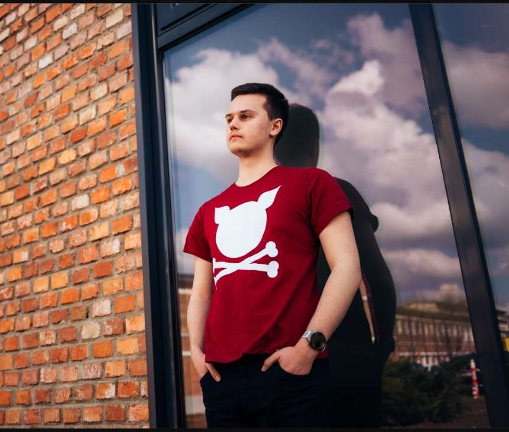

Inapoi la cuprins
Nume si Prenume: Bungardean Tudor Gabriel
Email personal: tudor0789@gmail.com
Email colaborari facultate: Bungardean.Mi.Tudor@student.utcluj.ro
"Încearcă sa fii un om de valoare și nu neapărat un om de succes".
Hobby-urile mele sunt: gaming-ul, tehnologia si programarea de jocuri.
Disciplina
Anul de studiu
Link
Programarea calculatoarelor si limbaje de programare
Anul 1
Fisa disciplina
Componente si circuite pasive
Anul 1
Fisa disciplina
Dispozitive electronice
Anul 1
Fisa disciplina

Anul nașterii
Schimbă Culoarea
Alta viata
Alt continut